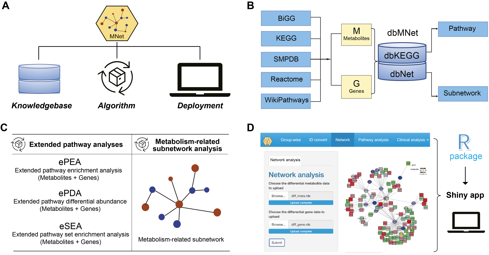

Overview
MNet: an R package and Shiny app for integrative analysis of metabolomic and transcriptomic data
-
Knowledgebase - dbMNet: dbKEGG for extended pathway analysis and dbNet for metabolism-related subnetwork analysis
-
Algorithm for extended pathway analysis: Extended pathway enrichment analysis (ePEA), extended pathway differential abundance analysis (ePDA), and extended pathway set enrichment analysis (eSEA) to identify dysregulated metabolic pathways via considering both metabolites and genes
- Algorithm for metabolism-related subnetwork analysis: Maximising the potential of our well-established dnet algorithm in integrative analysis of metabolomic and transcriptomic data to provide a systems-level understanding of metabolic interconnections

Figure 1. Overview of the analytical model underlying MNet. (A) The MNet model includes three primary components: Knowledgebase, Algorithm, and Deployment. Their interconnected relationships are illustrated. (B) The Knowledgebase component comprises gene-metabolite pairs sourced from five primary data sources. This comprehensive knowledgebase forms the foundation for both extended pathway and subnetwork analyses (see the next Algorithm component). (C) The Algorithm component includes methods for extended pathway and metabolism-related subnetwork analyses. Extended pathway analyses (implemented in ePEA, ePDA, and eSEA) consider both genes and metabolites, while metabolism-related subnetwork analysis employs our previously well-established algorithm ‘dnet’ to explore interactions involving genes and metabolites. (D) The Deployment component includes its use via programmatically accessible R functions and an intuitive Shiny user interface.
Get Started
Get started can be found here
Need help?
If you have any questions about MNet, please don’t hesitate to email me (guituant2009@163.com).